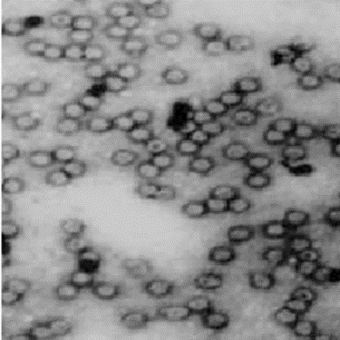

Tomato Bushy Stunt Virus
Models 
Virus Information
- RNA/DNA: RNA
- Capsid Symmetry: Icosahedral (T=3)
- Un/Enveloped: Non-enveloped
- Genome Architecture: Linear, positive-sense, single-stranded RNA
- Order: Unassigned
- Family: Tombusviridae
- Genus: Tombusvirus
- Species: Tomato bushy stunt virus
- Virion Polymerase: RNA-dependent RNA polymerase
- Size/Dimensions: 28-34 nm
- Genome Size: 4.0-5.4 kb
- Host/Vector: Plants
- Discovery Time: 1935
- Discovery Location: England
| .makerbot |  |
| .stl | |
Summary taken from Wikipedia: Tomato bushy stunt virus
Tomato bushy stunt virus (TBSV) is a virus that is the type species of the tombusvirus family. It was first reported in tomatoes in 1935 and primarily affects vegetable crops, though it is not generally considered an economically significant plant pathogen. Depending upon the host, TBSV causes stunting of growth, leaf mottling, and deformed or absent fruit. The virus is likely to be soil-borne in the natural setting, but can also transmitted mechanically, for example through contaminated cutting tools. TBSV has been used as a model system in virology research on the life cycle of plant viruses, particularly in experimental infections of the model host plant Nicotiana benthamiana.
Citations:
- Picture from - https://www.researchgate.net/figure/Electron-micrograph-of-purifi-ed-TBSV-Egh-virus-particles-Grids-were-negatively-stained_fig2_49664419
- https://viralzone.expasy.org/637?outline=all_by_species
- Smith, K. M. 1935. A new virus disease of the tomato. Ann. Appl. Biol. 22:731.